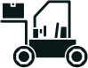
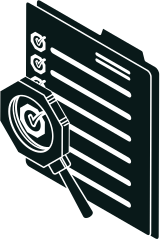
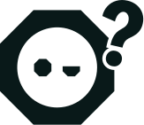
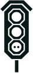

Kaiso builds your management system from how you already work: the AI drafts the documents, finds what is missing and preps the audit, and a Kaiso ISO expert checks every change before it lands.

An ISO standard is an agreed way of running part of your business — quality of work (ISO 9001), environmental impact (ISO 14001) or worker safety (ISO 45001). Certification means an independent auditor from an accredited Certification Body has checked that you do what you say you do, and issues a certificate that lasts three years with annual check-ins. Head contractors, government departments and large customers increasingly make it a condition of tendering, so without it you are filtered out before anyone reads your price.

2. The AI drafts your systemProcedures, registers and forms written from your answers, not a generic template.Every document, gap and audit action the AI produces is reviewed by a Kaiso ISO expert before it enters your system, and the review is recorded with a name and a date. Kaiso covers ISO 9001, ISO 14001 and ISO 45001. Kaiso is not a Certification Body and cannot issue or guarantee a certificate — an accredited Certification Body audits you and makes the final call.
You do the legwork. We make sure it's right.
We run the whole thing.

Up to 15 questions about how the business runs. You get your readiness score on screen, straight away.
{{ qHint }}
Your answers stay on this page until you choose to send them. Kaiso does not issue certificates — an accredited Certification Body makes the final call.
{{ bandText }}
This is a self-assessment, not an audit. It shows where your evidence is thin so you know what to work on first — every business on Kaiso starts somewhere on this scale.

The score is yours to keep. The full analysis breaks your answers down area by area, names the specific gaps an auditor would raise, and sets out the order to close them in. A Kaiso ISO expert goes through it with you.
Kaiso uses these details to send your gap analysis and to have an ISO expert follow up about your certification. Your details are not sold or passed to third parties, and are handled in line with the Australian Privacy Principles. You can ask for them to be deleted at any time.
The full gap analysis is on its way to your inbox, and a Kaiso ISO expert will call within one business day to walk you through it.